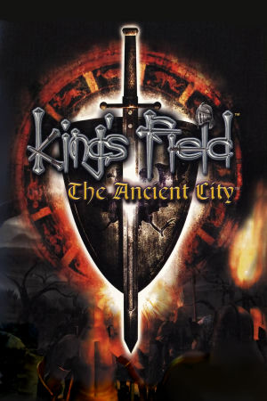

PlayStation 2
Originally released in Japan on October 4th, 2001, for the PlayStation 2, King's Field IV is the fourth main entry in the series. It continues the studio's trademark blend of slow, deliberate first-person combat, labyrinthine 3D dungeons, and unforgiving difficulty. When localized for Western audiences, it was retitled King's Field: The Ancient City, arriving in North America on March 26th, 2002, published by Agetec, and in Europe on March 28th, 2003, published by Metro3D.
The story follows Prince Devian of the Azalin Empire, who is tasked with returning the cursed "Idol of Sorrow," the source of corruption that destroyed the neighboring kingdom of Heladin, back to the ruined depths of the Land of Disaster. Along his journey, Devian uncovers the fate of Septiego the Sword Master, who had previously led an ill-fated expedition of over a thousand men to return the idol, and learns of the ancient Forest Folk, Earth Folk, and Dark Folk as he navigates a sprawling, interconnected subterranean world.
Historically, King's Field IV is significant as the final numbered entry in the original franchise. Its oppressive atmosphere, methodical stamina-based combat, and cryptic environmental storytelling serve as a direct blueprint for FromSoftware's later masterpieces like Demon's Souls and Dark Souls. Though it was a modest commercial success at the time, its reputation has grown steadily over the decades, cementing its status as a crucial bridge between the raw dungeon-crawling experiments of the PlayStation era and the modern Soulslike genre.
FromSoftware
- Official developer website.
King's Field Neocities
- A cool fan site for the King's Field franchise.
King's Field Fandom Wiki
- A fan wiki dedicated to the whole series, with maps, bestiary and item data.
PCSX2
- The best PS2 emulator.
King's Field IV Manual (JP)
- PDF copy of the manual in Japanese.
King's Field IV Strategy Guide
- Official strategy guide for KF4.
Sword of Moonlight
- A really cool tool for creating classic King's Field-like games.
Steam Grid DB (KF4) - Contains lots of cool options for artwork that can be used in your Steam library.